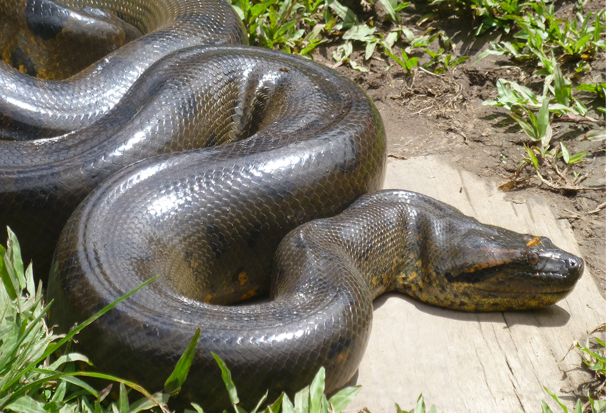
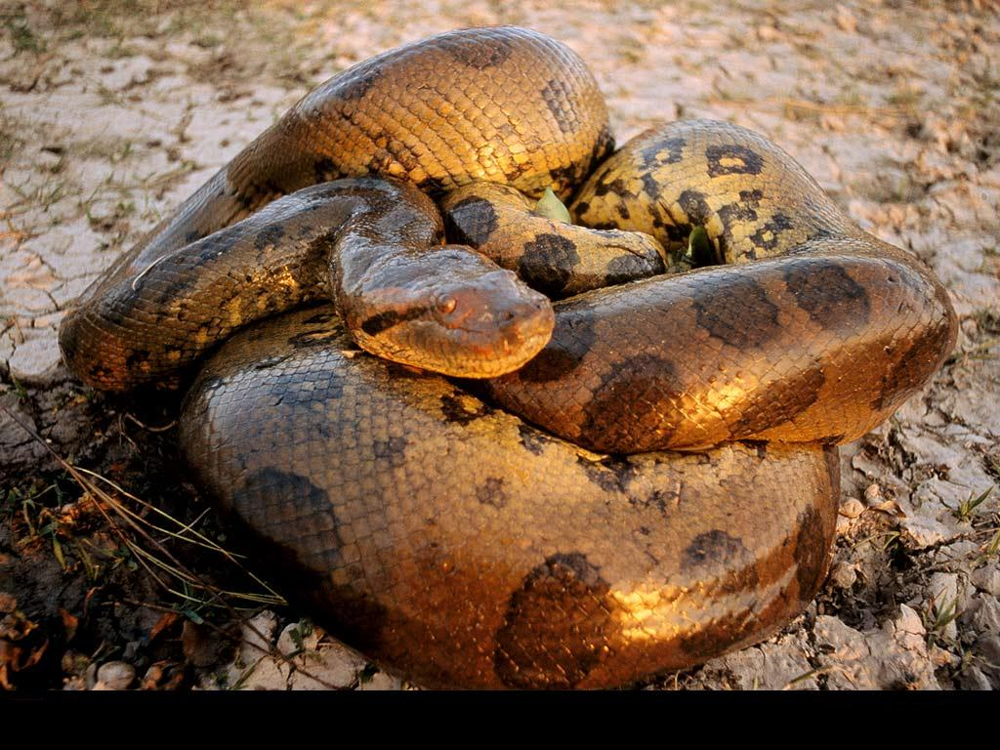
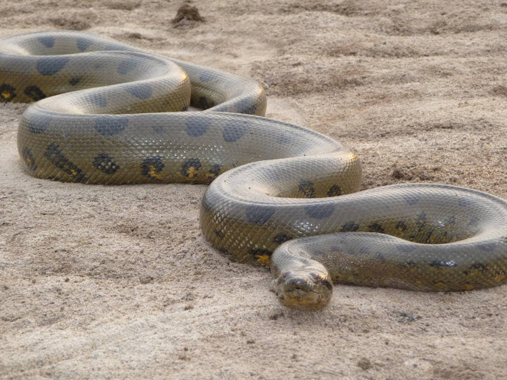
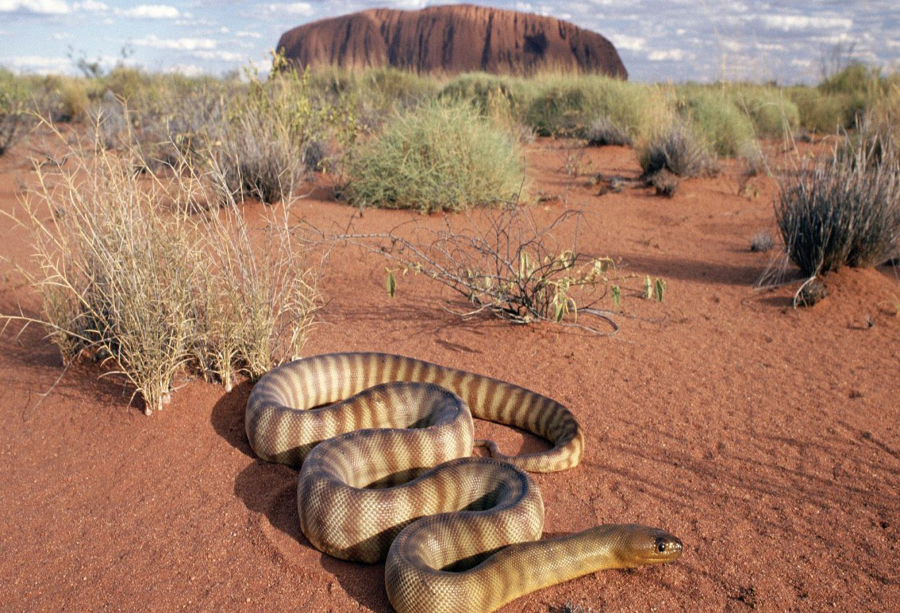

Ανακόντα
Τα ανακόντα μπορεί να τα συναντήσει κάποιος στα τροπικά δάση της Νοτίου Αμερικής. Τα ανακόντα είναι γένος των μη ιοβόλων φιδιών της οικογένειας Βοΐδες και της τάξης Φολιδωτά ή Λεπιδωτά. Είναι γενικά μοναχικά όντα και ζούν κοντά σε ποτάμια, λίμνες και βάλτους. Το νερό είναι η κυρίως μέθοδος διαφυγής όταν αντιμετωπίζουν κίνδυνο. Αντί να επιτεθούν θα προτιμήσουν να κυλίσουν ομαλά και ήσυχα μέσα στο νερό, απαρατήρητα αν είναι δυνατό. Τα ανακόντα τρώνε αμβίβια ζώα, όπως βάτραχους και φρύνους αλλά και ψάρια, πτηνά, πάπιες ακόμα και κροκόδειλους.
Το χρώμα του φιδιού είναι πράσινο και λαδί ή καστανό με μαύρες κηλίδες. Το μέγιστο μέγεθος των ερπετών αυτών έχει επιφέρει συζητήσεις. Υπολογίζεται ότι η ενήλικη ανακόντα κατά μέσο όρο φτάνει σε μέγεθος τα 18-20 μέτρα για το είδος της πράσινης ανακόντας, Eunectes murinus και πολύ σπάνια τα 23-25 μέτρα . Οι υπολογισμοί που κάνουν λόγο για 35-40 μ. είναι ασαφείς Σε έρευνα που έγινε σε 1000 είδη που πιάστηκαν στη Βενεζουέλα, το μεγαλύτερο ήταν 17 μέτρα και ζύγιζε 100 κιλά.
Τα ανακόντα γεννάνε 24-35 νεογνά κάθε φορά. Πρόκειται για ωοζωοτόκο ζώο, που σημαίνει ότι γεννά ζωντανά μικρά. Τα ανακόντα είναι εξαιρετικά δυσεύρετα πλάσματα με αποτέλεσμα να είναι δύσκολο να εντοπιστούν από τους επιστήμονες για να μελετηθούν. Ζουν ήσυχα και δεν αφήνουν ποτέ ίχνη. Προτιμούν να πέρνανε τον περισσότερο χρόνο τους βαθιά στα σκοτεινά νερά του φυσικού τους περιβάλλοντος. Τα μάτια και ρουθούνια είναι στο πάνω μέρος της κεφαλής του ώστε να μπορεί να παρακολουθεί το θήραμα του κρυμμένο κατώ από το νερό με άνεση.
Ένα ανακόντα σκοτώνει το θήραμα του τυλίγωντας το σώμα του γύρω από το θύμα και πιέζοντας ασφυκτικά καταφέρνει να κόψει την αναπνοή από το θήραμα του. Τα σαγόνια του ανακόντα είναι κατασκευασμένα με τέτοιο τρόπο ώστε να του επιτρέπουν να μπορεί να καταπιεί το θήραμα του ολόκληρο, ανεξαρτήτος μεγέθους. Τα ανακόντα μπορεί να χρειαστεί να ξαναφάνε μετά απο εβδομάδες ή μήνες αν το θήραμα τους ήταν σχετικά μεγάλο σε μέγεθος.
Ο μεγαλύτερος εχθρός και θηρευτής των ανακόντα είναι ο άνθρωπος. Σε αρκετά μέρη της Νοτίου Αμερικής κυνηγούνται παράνομα αλλά και νόμιμα για να πουληθούν για το δέρμα τους ή για να προωθηθούν στο εμπόριο ζώο. Συχνά, αυτά τα ζώα θανατώνονται επειδή ο ανθρώπος τα φοβάται ή τα αντιπαθεί.
|  |  |